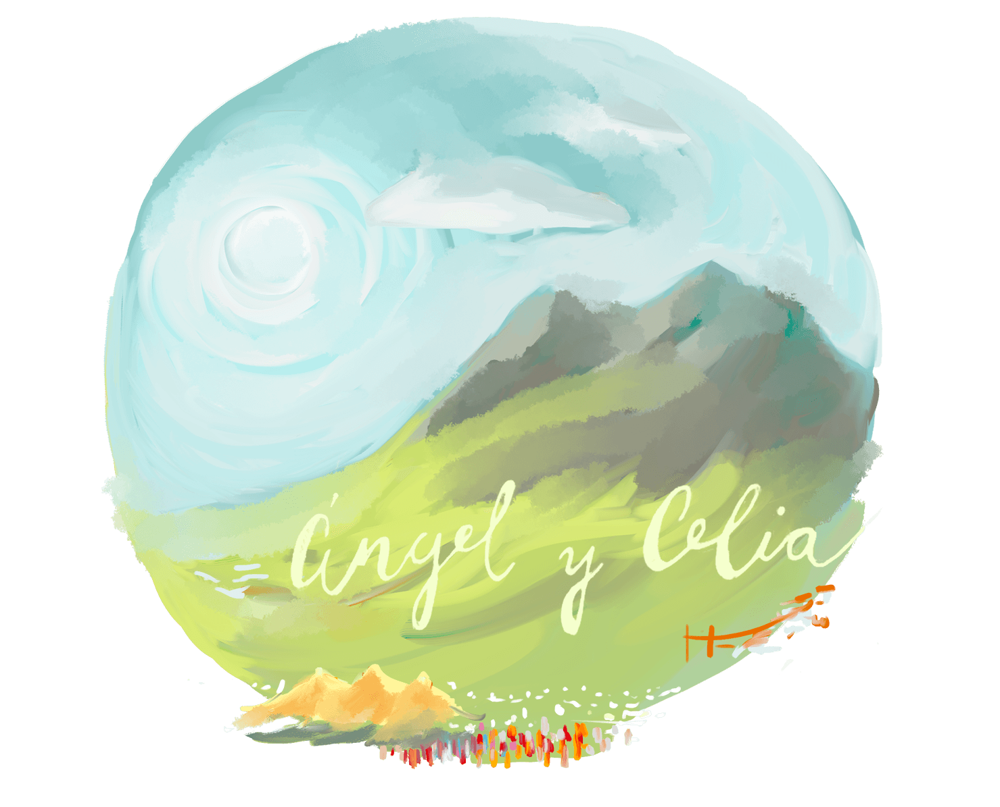

Content for Section 1
La celebración será el Sábado día 23 de Agosto, desde las 12:30 de la mañana hasta la madrugada. Para aquellos que quieran quedarse más, pueden preguntarnos por alojamiento en el pueblo o también habilitaremos zona de acampada en nuestra parcela.
IMPORTANTE: Para los que vinen de Jeré: Este año hay vuelos directos Jerez-Oviedo. Proaza está a 20km del sur de Oviedo, la capital de Asturias. Si vienes en coche, recomendamos llegar hasta Oviedo por la autovía, tomar la A63 dirección Grado - La Espina y después la N634 dirección Trubia y continuar hasta Proaza. Si vienes en avión, el transporte hasta Oviedo cuesta 9 euros en Autobús y 40-50 eur en taxi. Para ir y volver de Proaza habrá un autobús que parará en el Instituto Alfonso II y otras paradas que están por definir. El horario también está por definir. En 2024 habilitaron autobús de línea de Oviedo a Proaza durante el verano, cada hora de 8 a 23. Si esto se repite en 2025, existirá también esa opción. En taxi también se puede ir o venir de Oviedo por 30-40 eur el trayecto. Para los que se queden por Proaza y alredores, en Proaza hay dos taxistas que suelen estar dispoinbles si los llamas con antelación. Además de 4 taxistas en Teverga que, aunque salgan más caros, también pueden atenderos. Dejaremos los teléfonos aquí.
Será -como lo llaman en Asturias- una fiesta de prao. Una celebración en el campo, donde habrá diferentes elaboraciones típicas astuiranas ademés de música en directo y juegos. Al comienzo habrá una pequeña ceremonia y una bendición por parte de un sacerdote amigo de la familia de Celia.
Traje tradicional. Nos gusatría que vayáis vestidos con un traje tradiconal típico del lugar en que nacísteis o de donde os sentís originarios. Esta norma de vestir no es obligatoria para aquellos mayores de 60 años.
Será -como lo llaman en Asturias- una fiesta de prao. Una celebración en el campo, donde habrá diferentes elaboraciones típicas astuiranas ademés de música en directo y juegos. Al comienzo habrá una pequeña ceremonia y una bendición por parte de un sacerdote amigo de la familia de Celia.
Confirma aquí tu asistenciaTraje tradicional. Nos gusatría que vayáis vestidos con un traje tradiconal típico del lugar en que nacísteis o de donde os sentís originarios. Esta norma de vestir no es obligatoria para aquellos mayores de 60 años.